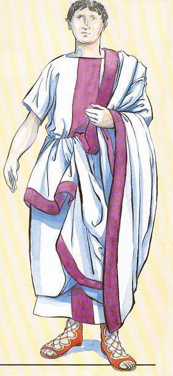
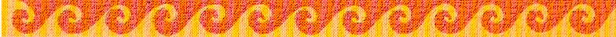

|
 |
Salve!
Mi nombre es Antonino Sergialis, nací en Roma un invierno del año 17 anterior a la era actual.
De familia patricia fundadora de Roma; Senador de herencia Regia y
actual Gobernador de un pequeño municipio al este de Hispania, en una
gran ciudad de gentes amables y clima cálido. Rica gracias a la madre
tierra, y mimada por el Mare Nostrum: SAGUNTUM.
Nombrada así por nuestros padres Latinos. Anteriormente llamada Arse
por nuestros fieles y valientes amigos Iberos edetanos, a los cuales
conocimos gracias al gran comercio Fenicio y Griego.
Intimo amigo del noble Tiberio, huí de Roma a la provincia
Tarraconensis cuando este abandono el poder en manos de los cuervos
y alimañas de la capital a merced del destino, Retiro motivado al
enloquecer el CESAR por la muerte de su amado y único hijo Druso
Germánico.
Un año después de la muerte de Tiberio en el 37, fui
asesinado por orden Imperial de Caligula (apodado el botitas). Se decía
que él mismo asesino a su tío abuelo Tiberio, cuando este, enfermo y en
un arrebato de cordura, quiso volver a Roma desde su residencia en
Capri para poner orden en el Senado. Lo cierto es que, el "botitas"
fue asesinando a todos aquellos amigos fieles del bueno de Tiberio.
Yo no fui menos.
Aun siento la cruel daga rompiéndome el alma. Aquel caluroso atardecer
del verano en el año 38 de la era actual.
Esto os creará confusión. Os preguntareis; ¿Muerto?
¿Como escribe hoy día?
Los Dioses, o quizás ese único Dios judío que ha creado las actuales
religiones occidentales, me ha vuelto a reencarnar en esta época. Quizás
por que aun no merezca compartir el Olimpo divino, quizás, para
terminar un camino que fue segado a la fuerza.
Sea como fuere, o porque fuera; aquí estoy para contaros todo esto. Y
daros a conocer esa gran cultura que fue Roma.
Ese alma que un día partió una daga, ha vuelto también partida en dos
sentimientos:
El primero con mi actual religión (una más como la vuestra) y mi nueva
ciudad y patria; Valencia (Valentia). ESPAÑA.
El segundo sentimiento es para aún mi amada Roma; Hispania-Tarraconensis, y en especial a esa hoy pequeña pero gran ciudad, que
todavía conserva el glorioso nombre de SAGUNT.
Gracias a Dios! o a los Dioses, he vuelto a nacer en la misma
tierra que me acogió tan dulcemente y lloró mi muerte en la otra vida.
Ahora ya me conocéis algo más.
Los tiempos han cambiado, no así las formas, incluso las normas.
Seguimos viviendo al estilo del antiguo Imperio. Y también estamos
reunificando y ampliando el Imperio; EUROPA se llama ahora.
Los medios de comunicación han evolucionado, y como buen romano, se
de la importancia de una buena comunicación, segura y rápida, para
consolidar y ampliar nuestra cultura.
Disfrutar de esta Web, abierta a todos los "ciudadanos del Impero" y a
los de cualquier Imperio, Cultura o pueblo del Universo.
Salve ! bienvenido a www.tarraconensis.com. Un saludo (con el puño en
el pecho) de corazón.

La historia de esta presentación quizás es más
sentimental que real; en cualquier caso va dedicada a todos los amantes de
la Historia Antigua y la Arqueología.
Gracias por estar en mi vida y hacer que la viva feliz.
|